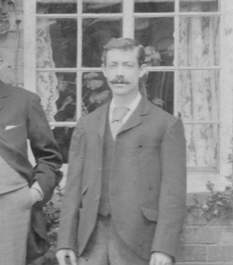
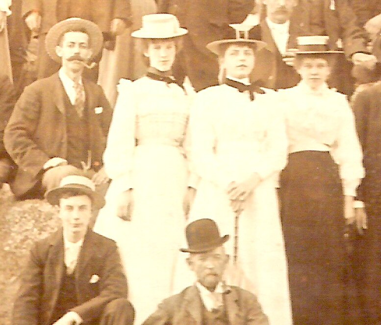
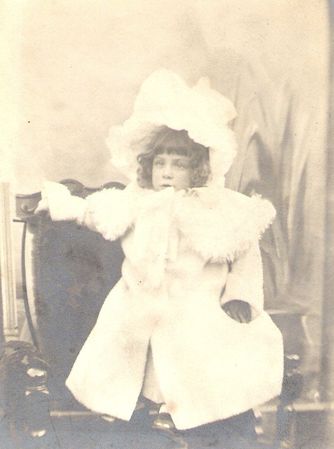
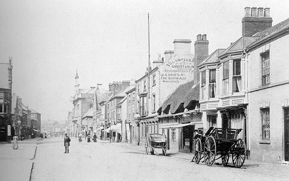
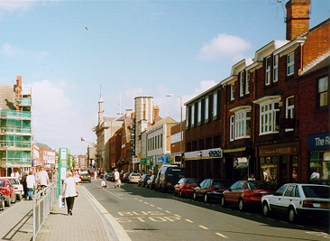
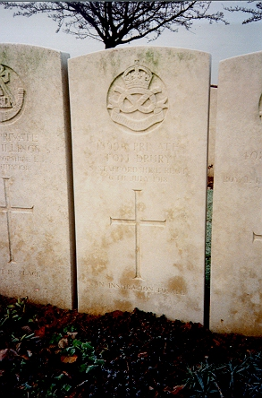

Tom Drury, 1869 - 1918

Tom was born youngest son of William Drury and Ann (formerly Wood) at Eagle in Lincolnshire, on 29 June 1869 and baptised at Eagle parish church on 1 August 1869. Tom was one of eight children and his father farmed at Eagle where Tom spent all of his childhood helping out around the farm. When Tom was 14 the family moved to Thorpe on the Hill and a year later he left home to begin a five year printers apprenticeship on 20 November 1884, with Samuel White in Newark, Nottinghamshire. Samuel White was the publisher of the Newark Advertiser and it would have been at his Appleton Gate or Magnus Street printing works that Tom would have completed his apprenticeship. During this time Tom also enlisted and served with 4th Territorial Battalion of the Sherwood Foresters, as a part-time soldier, attending camp once a year.

By 1890 Tom had completed his apprenticeship and had moved to nearby Loughborough to take up employment for Alfred Clarke's of 32 Swan Street, Loughborough as a printers compositor. On arriving in the town he took up lodgings in Albert Street and within seven years he had met Lucy Warren a bookbinder who may also have been employed at Alfred Clarkes. Lucy was the daughter of a local coachbuilder and they married 2 August 1897.

Tom (left) and Lucy (second from right) shortly before their marriage in 1897, near Spring Hill Farm


Tom and Lucy's first child, William (Bill) , was born on 11 November 1897 at Station Street. The following year 1898, Tom left Alfred Clarke's employment and moved to Will's Loughborough Printers in Angel Yard (later known for Ladybird Books). Tom was an active member of the Loughborough Printers Cricket Team and also a playing member of Loughborough Bowls Club. Tom was also an active member of the Typographical Association, his trade union.

The family moved from Station Street to Oxford Street. In 1903 Tom and Lucy had their second child Eva. Tom continued to work at the Angel Press up until the outbreak of war. By 1914 they had moved to Devonshire Square.


Tom volunteered at Loughborough Drill Hall a few weeks after the outbreak of war on the evening of 24 September 1914 with his brother-in-law Thomas Warren and other friends. He was 44 years old, but informed them that he was ten years younger. For some reason they were assigned to the 9th Battalion South Staffs Regiment (rather than the local Leicesters) at Lichfield. After basic training they served in the Armentires area until April 1916. In April 1916 Tom was on leave in Loughborough and is mentioned in the local paper for breaking the drinking laws in his brother in laws pub.

On 29 December 1916 Lucy gave birth to their third child, Lyn whilst Tom was away on active service. Its not clear how many times Tom saw his new baby in the 18 months before his death. Lyn also died soon after in 1921 aged just 4.

Following duty on the Somme Front, Tom's division was sent to the Ypres salient. In June 1917, the 23rd was part of the spear head attack at Messines. In October 1917 Tom was transferred to the 1/6th South Staffordshire Regiment. Shortly after he was attached to the 240th Employment Coy and transferred to the Labour Corps (probably due to his age). All this time he was an officer's cook.
Tom's war service in more detail
Tom was killed at "the headquarters division" on 6 July 1918, aged 49. He is buried in Pernes France. He was killed when a shell hit the mess, probably during an artillery barrage.

Tom's grave in Pernes Cemetery